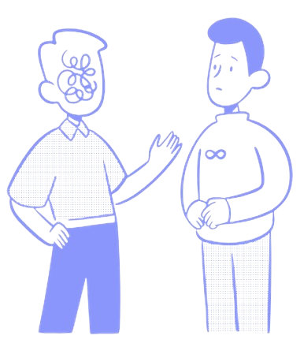
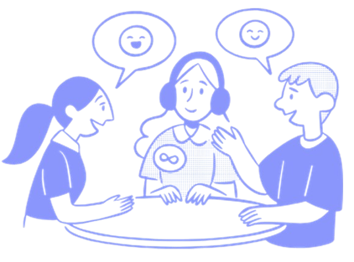
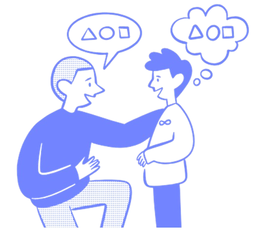

What People Are Saying

"Living with autism means facing daily challenges that others may not understand. It can be isolating and frustrating at times."

"It feels empowering when people understand my condition and genuinely take it into account in their interactions."

"Knowing there are people who are there to help makes a big difference in my daily life."